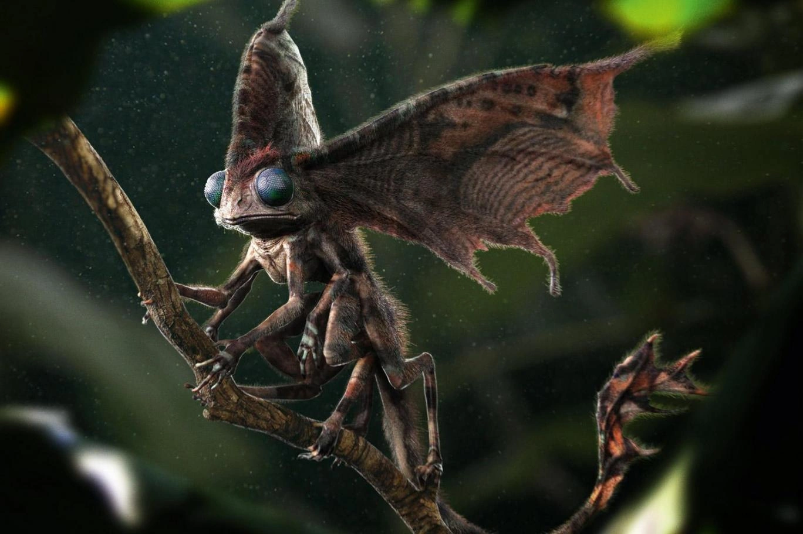

← VOLTAR ÀS CRIATURAS

DOXY
Doxy · Criatura alada
O Doxy se parece com uma pequena fada, mas é coberto de pelos escuros e tem quatro braços e asas de besouro. É comum em casas bruxas antigas.
Seus dentes são afiados e venenosos, e a mordida exige antídoto. Mesmo pequeno, ele costuma atacar em bando.
HABITAT
Europa e América do Norte
ALIMENTAÇÃO
Onívoro
TEMPERAMENTO
Agressivo
CLASSIFICAÇÃO
XXX (Ministério)